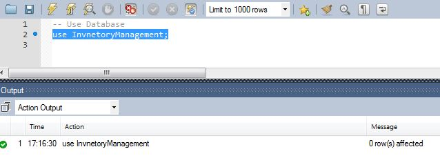
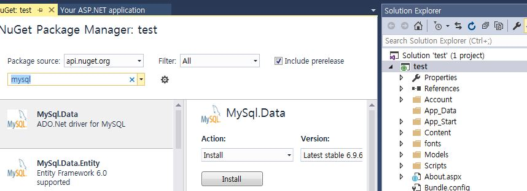

ASP.Net 4.6 CRUD Using MySQL with SP and Helper Class
Introduction

This article explains in detail how to insert/update/delete and select data from a MySQL database using a helper class and Stored Procedure using ASP.Net 4.6.
Prerequisites
Visual Studio 2015: You can download it from
Visual Studio (in my example I have used Visual Studio Community 2015 RC).
MySQL: The reason why I have used MySQL is it's open source. For study and small project purposes we can use MySQL. You can download MySQL from their website.
Download MySQL Installer
I have used mysql-installer-community-5.6.24.0 (Windows Installer).
You also need to download and install MySQL Connector for .NET that is available here:
Download Connector/Net
In this article, we will see the following.
- Introduction to ASP.NET 5.
- Create Table and Stored Procedure in MySQL Database.
- Creating MySQL helper Class for ASP.NET 5.
- Create a simple Webform website for performing CRUD operation for MySQL Database.
Building the Sample
Introduction to ASP.NET 5
I began working with Visual Studio 2003 (V1.1) and today we have reached Visual Studio 2015 (V4.6). Working with web projects will always make us energetic. Let's see few important and new features available in ASP.NET 5.
ASP.NET 5 is:
- Cross-platform (Windows, Mac and Linux)
- Faster Development Cycle
- Open Source
- Easy to create cloud-based web applications
To learn more in detail about ASP.NET 5, refer to the following links.
Create Table in MySQL: Let us see how to write a query for creating a table and inserting a sample record.
After MySQL has been installed, open it.

Click on the local instance of MySQL, then enter your MySQL password and press Enter.

After successful login to MySQL, we can see an editor where we can write our queries or create a Stored Procedure and so on.

Description
Creating ItemMaster Table: let's create a simple ItemMaster table. This table will be used to do all our CRUD operations from our ASP.NET 5 web application.
First we create a database and we create our ItemMaster table inside our InventoryManagement database.
CREATE DATABASE InvnetoryManagement;
CREATE DATABASE InvnetoryManagement;
Use Database

Here we can see I have selected the query "use Inventorymanagement" and then press the something. In the output window we can see the result is success with the Green icon. If it has an error then it will display the error icon.
In the same way next is our create table query. We write our query and execute it similarly.
Create table Item Master
CREATE TABLE ItemMaster ( Item_Code int NOT NULL AUTO_INCREMENT, Item_Name varchar(100) NOT NULL, Price int, TAX1 int, Description varchar(100) , IN_DATE datetime, IN_USR_ID varchar(50) , DeleteStatus varchar(10), PRIMARY KEY (Item_Code) );
CREATE TABLE ItemMaster ( Item_Code int NOT NULL AUTO_INCREMENT, Item_Name varchar(100) NOT NULL, Price int, TAX1 int, Description varchar(100) , IN_DATE datetime, IN_USR_ID varchar(50) , DeleteStatus varchar(10), PRIMARY KEY (Item_Code) );
Insert sample Record to Univ Master
-- Insert sample Record to Univ Master
insert into ItemMaster(Item_Name,Price,TAX1,Description,IN_DATE,IN_USR_ID,DeleteStatus) values ('headPhone',600,2,'head Phone',now(),'SHANU','N');
insert into ItemMaster(Item_Name,Price,TAX1,Description,IN_DATE,IN_USR_ID,DeleteStatus) values ('Mouse',30,0,'Mousee',now(),'SHANU','N');
-- Insert sample Record to Univ Master insert into ItemMaster(Item_Name,Price,TAX1,Description,IN_DATE,IN_USR_ID,DeleteStatus) values ('headPhone',600,2,'head Phone',now(),'SHANU','N'); insert into ItemMaster(Item_Name,Price,TAX1,Description,IN_DATE,IN_USR_ID,DeleteStatus) values ('Mouse',30,0,'Mousee',now(),'SHANU','N');
-- test Select Statement select * from ItemMaster;
-- test Select Statement select * from ItemMaster;
NOTE :In attached Zip file you can find the MYSQL Script folder copay all the script and execute one by one.
Create our First ASP.NET Web Application
After installing our Visual Studio 2015, click Start then select Programs then select Visual Studio 2015. Click Visual Studio 2015 RC(In this demo i have Used Visual Studio 2015 RC.Now you can download and use the same with latest Visual Studio 2015).

Click New -> Project then select Web -> ASP.NET Web Application. Select your project's location and enter your web application name.

Select Web Forms and click OK. Since we are developing our ASP.NET web form here we select Web Forms.

After creating our website we can create a class file for our “MySQLHelper” class and “BizLogic” class.

I have created both classes inside a folder as in the following.
First we need to add the “Mysql.Data.dll” file to our reference.
There are two ways to add the DLL.
The same as before, we use Visual Studio 2010 or 2008. Add a reference and select Mysql.Data.dll.

Another method is by adding from Manage NuGet packages.

Search for MySQL and click Install. It will add the MySQL.Data.dll to your reference.

“ShanuMySqlHelper.CS” this is the class that I used to create a helper class to connect to a MySQL database and do all ExecuteQuery, ExecuteNonQuery, return DataSet and DataTable. In this class I created a separate function for
ExecuteNonQuery, ExecuteQuery, return DataSet, Execute by Query, Execute by Stored Procedure and so on.
For example, here we can see a simple method that will be executed by a query and do the insert/update and delete actions using the ExecuteNonQuery method. To this method I will pass the query from my web application to our businsess classs and from the business
class I will pass the query to this MySQL Helper class.
#region ExecuteNonQuery for insert/Update and Delete
//For Insert/Update/Delete
public int ExecuteNonQuery_IUD(String Querys)
{
int result=0;
//open connection
if (OpenConnection() == true)
{
//create command and assign the query and connection from the constructor
MySqlCommand cmd = new MySqlCommand(Querys, connection);
//Execute command
result= cmd.ExecuteNonQuery();
//close connection
CloseConnection();
}
return result;
}
#endregion
Here is another example to execute the Stored procedure and return the result as the Dataset.
#region Dataset for Stored Procedure and return as DataTable
//for select result and return as DataTable
public DataSet SP_DataTable_return(String ProcName, params MySqlParameter[] commandParameters)
{
DataSet ds = new DataSet();
//open connection
if (OpenConnection() == true)
{
//for Select Query
MySqlCommand cmdSel = new MySqlCommand(ProcName, connection);
cmdSel.CommandType = CommandType.StoredProcedure;
// Assign the provided values to these parameters based on parameter order
AssignParameterValues(commandParameters, commandParameters);
AttachParameters(cmdSel, commandParameters);
MySqlDataAdapter da = new MySqlDataAdapter(cmdSel);
da.Fill(ds);
//close connection
CloseConnection();
}
return ds;
}
#region ExecuteNonQuery for insert/Update and Delete //For Insert/Update/Delete public int ExecuteNonQuery_IUD(String Querys) { int result=0; //open connectionif (OpenConnection() == true) {//create command and assign the query and connection from the constructor MySqlCommand cmd = new MySqlCommand(Querys, connection); //Execute command result= cmd.ExecuteNonQuery(); //close connection CloseConnection(); }return result; } #endregion Here is another example to execute the Stored procedure and return the result as the Dataset. #region Dataset for Stored Procedure and return as DataTable //for select result and return as DataTable public DataSet SP_DataTable_return(String ProcName, params MySqlParameter[] commandParameters) { DataSet ds = new DataSet(); //open connectionif (OpenConnection() == true) {//for Select Query MySqlCommand cmdSel = new MySqlCommand(ProcName, connection); cmdSel.CommandType = CommandType.StoredProcedure; // Assign the provided values to these parameters based on parameter order AssignParameterValues(commandParameters, commandParameters); AttachParameters(cmdSel, commandParameters); MySqlDataAdapter da = new MySqlDataAdapter(cmdSel); da.Fill(ds); //close connection CloseConnection(); }return ds; }
Complete helper class
The following is my complete helper class.
using System; using System.Collections.Generic; using System.Linq; using System.Web; using MySql.Data; using MySql.Data.MySqlClient; using MySql.Data.Types; using System.Configuration; using System.Data; /// <summary> /// Author : Shanu /// Create date : 2015-05-09 /// Description : Biz Class /// Latest /// Modifier : /// Modify date : /// </summary> namespace ShanuVS2015.DBClass.shanuMYSQLHelper { public class shanuMySqlHelper { public String ConnectionString = ConfigurationManager.ConnectionStrings["shanu"].ToString(); public MySqlConnection connection; #region Initiallize public shanuMySqlHelper() { Initialize(); } //Initialize values private void Initialize() { ConnectionString = ReadConnectionString(); connection = new MySqlConnection(ConnectionString); } public String ReadConnectionString() { return ConnectionString = ConfigurationManager.ConnectionStrings["shanu"].ToString(); } #endregion #region DB ConnectionOpen public bool OpenConnection() { try { connection.Open(); return true; } catch (MySqlException ex) { } return false; } #endregion #region DB Connection Close //Close connection public bool CloseConnection() { try { connection.Close(); return true; } catch (MySqlException ex) { return false; } } #endregion #region ExecuteNonQuery for insert/Update and Delete //For Insert/Update/Delete public int ExecuteNonQuery_IUD(String Querys) { int result=0; //open connection if (OpenConnection() == true) { //create command and assign the query and connection from the constructor MySqlCommand cmd = new MySqlCommand(Querys, connection); //Execute command result= cmd.ExecuteNonQuery(); //close connection CloseConnection(); } return result; } #endregion #region Dataset for select result and return as Dataset //for select result and return as Dataset public DataSet DataSet_return(String Querys) { DataSet ds = new DataSet(); //open connection if (OpenConnection() == true) { //for Select Query MySqlCommand cmdSel = new MySqlCommand(Querys, connection); MySqlDataAdapter da = new MySqlDataAdapter(cmdSel); da.Fill(ds); //close connection CloseConnection(); } return ds; } #endregion #region DataTable for select result and return as DataTable //for select result and return as DataTable public DataTable DataTable_return(String Querys) { DataTable dt = new DataTable(); //open connection if (OpenConnection() == true) { //for Select Query MySqlCommand cmdSel = new MySqlCommand(Querys, connection); MySqlDataAdapter da = new MySqlDataAdapter(cmdSel); da.Fill(dt); //close connection CloseConnection(); } return dt; } #endregion #region Dataset for Stored Procedure and return as DataTable //for select result and return as DataTable public DataSet SP_DataTable_return(String ProcName, params MySqlParameter[] commandParameters) { DataSet ds = new DataSet(); //open connection if (OpenConnection() == true) { //for Select Query MySqlCommand cmdSel = new MySqlCommand(ProcName, connection); cmdSel.CommandType = CommandType.StoredProcedure; // Assign the provided values to these parameters based on parameter order AssignParameterValues(commandParameters, commandParameters); AttachParameters(cmdSel, commandParameters); MySqlDataAdapter da = new MySqlDataAdapter(cmdSel); da.Fill(ds); //close connection CloseConnection(); } return ds; } private static void AttachParameters(MySqlCommand command, MySqlParameter[] commandParameters) { if (command == null) throw new ArgumentNullException("command"); if (commandParameters != null) { foreach (MySqlParameter p in commandParameters) { if (p != null) { // Check for derived output value with no value assigned if ((p.Direction == ParameterDirection.InputOutput || p.Direction == ParameterDirection.Input) && (p.Value == null)) { p.Value = DBNull.Value; } command.Parameters.Add(p); } } } } private static void AssignParameterValues(MySqlParameter[] commandParameters, object[] parameterValues) { if ((commandParameters == null) || (parameterValues == null)) { // Do nothing if we get no data return; } // We must have the same number of values as we pave parameters to put them in if (commandParameters.Length != parameterValues.Length) { throw new ArgumentException("Parameter count does not match Parameter Value count."); } // Iterate through the SqlParameters, assigning the values from the corresponding position in the // value array for (int i = 0, j = commandParameters.Length; i < j; i++) { // If the current array value derives from IDbDataParameter, then assign its Value property if (parameterValues[i] is IDbDataParameter) { IDbDataParameter paramInstance = (IDbDataParameter)parameterValues[i]; if (paramInstance.Value == null) { commandParameters[i].Value = DBNull.Value; } else { commandParameters[i].Value = paramInstance.Value; } } else if (parameterValues[i] == null) { commandParameters[i].Value = DBNull.Value; } else { commandParameters[i].Value = parameterValues[i]; } } } #endregion } }
using System; using System.Collections.Generic; using System.Linq; using System.Web; using MySql.Data; using MySql.Data.MySqlClient; using MySql.Data.Types; using System.Configuration; using System.Data; /// <summary>/// Author : Shanu/// Create date : 2015-05-09/// Description : Biz Class/// Latest/// Modifier : /// Modify date : /// </summary>namespace ShanuVS2015.DBClass.shanuMYSQLHelper { publicclass shanuMySqlHelper { public String ConnectionString = ConfigurationManager.ConnectionStrings["shanu"].ToString(); public MySqlConnection connection; #region Initiallizepublic shanuMySqlHelper() { Initialize(); } //Initialize valuesprivatevoid Initialize() { ConnectionString = ReadConnectionString(); connection = new MySqlConnection(ConnectionString); } public String ReadConnectionString() { return ConnectionString = ConfigurationManager.ConnectionStrings["shanu"].ToString(); } #endregion #region DB ConnectionOpenpublicbool OpenConnection() { try { connection.Open(); returntrue; } catch (MySqlException ex) { } returnfalse; } #endregion #region DB Connection Close//Close connectionpublicbool CloseConnection() { try { connection.Close(); returntrue; } catch (MySqlException ex) { returnfalse; } } #endregion #region ExecuteNonQuery for insert/Update and Delete//For Insert/Update/Deletepublicint ExecuteNonQuery_IUD(String Querys) { int result=0; //open connectionif (OpenConnection() == true) { //create command and assign the query and connection from the constructor MySqlCommand cmd = new MySqlCommand(Querys, connection); //Execute command result= cmd.ExecuteNonQuery(); //close connection CloseConnection(); } return result; } #endregion #region Dataset for select result and return as Dataset//for select result and return as Datasetpublic DataSet DataSet_return(String Querys) { DataSet ds = new DataSet(); //open connectionif (OpenConnection() == true) { //for Select Query MySqlCommand cmdSel = new MySqlCommand(Querys, connection); MySqlDataAdapter da = new MySqlDataAdapter(cmdSel); da.Fill(ds); //close connection CloseConnection(); } return ds; } #endregion #region DataTable for select result and return as DataTable//for select result and return as DataTablepublic DataTable DataTable_return(String Querys) { DataTable dt = new DataTable(); //open connectionif (OpenConnection() == true) { //for Select Query MySqlCommand cmdSel = new MySqlCommand(Querys, connection); MySqlDataAdapter da = new MySqlDataAdapter(cmdSel); da.Fill(dt); //close connection CloseConnection(); } return dt; } #endregion #region Dataset for Stored Procedure and return as DataTable//for select result and return as DataTablepublic DataSet SP_DataTable_return(String ProcName, params MySqlParameter[] commandParameters) { DataSet ds = new DataSet(); //open connectionif (OpenConnection() == true) { //for Select Query MySqlCommand cmdSel = new MySqlCommand(ProcName, connection); cmdSel.CommandType = CommandType.StoredProcedure; // Assign the provided values to these parameters based on parameter order AssignParameterValues(commandParameters, commandParameters); AttachParameters(cmdSel, commandParameters); MySqlDataAdapter da = new MySqlDataAdapter(cmdSel); da.Fill(ds); //close connection CloseConnection(); } return ds; } privatestaticvoid AttachParameters(MySqlCommand command, MySqlParameter[] commandParameters) { if (command == null) thrownew ArgumentNullException("command"); if (commandParameters != null) { foreach (MySqlParameter p in commandParameters) { if (p != null) { // Check for derived output value with no value assignedif ((p.Direction == ParameterDirection.InputOutput || p.Direction == ParameterDirection.Input) && (p.Value == null)) { p.Value = DBNull.Value; } command.Parameters.Add(p); } } } } privatestaticvoid AssignParameterValues(MySqlParameter[] commandParameters, object[] parameterValues) { if ((commandParameters == null) || (parameterValues == null)) { // Do nothing if we get no datareturn; } // We must have the same number of values as we pave parameters to put them inif (commandParameters.Length != parameterValues.Length) { thrownew ArgumentException("Parameter count does not match Parameter Value count."); } // Iterate through the SqlParameters, assigning the values from the corresponding position in the // value arrayfor (int i = 0, j = commandParameters.Length; i < j; i++) { // If the current array value derives from IDbDataParameter, then assign its Value propertyif (parameterValues[i] is IDbDataParameter) { IDbDataParameter paramInstance = (IDbDataParameter)parameterValues[i]; if (paramInstance.Value == null) { commandParameters[i].Value = DBNull.Value; } else { commandParameters[i].Value = paramInstance.Value; } } elseif (parameterValues[i] == null) { commandParameters[i].Value = DBNull.Value; } else { commandParameters[i].Value = parameterValues[i]; } } } #endregion } }
Next is our “shanuBizClasscs”. Here this will be our Business Class from our webform. We pass all the queries and parameters to the Busness class and from the Business class we pass all the parameters and queries or SP to our MySQL helper class.
For example, here we can see I have created an object for our MysqlHelperclass and from the Business class method passed the Stored Procedure name and parameters to the helperclass method.
shanuMYSQLHelper.shanuMySqlHelper objDAL = new shanuMYSQLHelper.shanuMySqlHelper();
//All Business Method here
public DataSet SelectList(String SP_NAME, SortedDictionary<string, string> sd)
{
try
{
return objDAL.SP_DataTable_return(SP_NAME, GetSdParameter(sd));
}
catch (Exception ex)
{
throw ex;
}
}
shanuMYSQLHelper.shanuMySqlHelper objDAL = new shanuMYSQLHelper.shanuMySqlHelper(); //All Business Method herepublic DataSet SelectList(String SP_NAME, SortedDictionary<string, string> sd) { try { return objDAL.SP_DataTable_return(SP_NAME, GetSdParameter(sd)); } catch (Exception ex) { throw ex; } }
Design your web page and do CRUD Operations
In my sample application let's see:
- How to search for an item by Item_Code and by Item_Name. Using Stored Procedure.
- Add new Item to ItemMaster. Using Stored Procedure.
- Edit Item from ItemMaster. Using Stored Procedure.
- Delete item from ItemMaster. Using update Query. (For the delete, I will not delete the record from the table. Instead of deleting the record from the table, I have a field called DeleteStatus and by default during an insert I will use the status "N" for deletion that I will update to "Y".
Search Item: An item can be searched for by Item Code and by Item Name. In SQL Server we use % like to display all the records that start with the character. For MySQL we use CONCAT(TRIM(COLUMN_NAME),’%’).
Stored Procedure
The following is the Stored Procedure to search by ItemCode and Item Name:
-- Stored procedure to search by ItemCode and Item Name
DELIMITER //
CREATE PROCEDURE USP_SelectItemmaster(IN P_ItemCode varchar(100),IN P_ItemName varchar(100))
BEGIN
SELECT Item_Code,
Item_Name,
Price,
TAX1,
Description,
IN_DATE,
IN_USR_ID,
DeleteStatus
FROM
ItemMaster
where
Item_Code like CONCAT(TRIM(IFNULL(P_ItemCode, '')), '%')
and Item_Name like CONCAT(TRIM(IFNULL(P_ItemName, '')), '%')
AND DeleteStatus='N';
END //
DELIMITER ;
-- Stored procedure to search by ItemCode and Item Name DELIMITER // CREATE PROCEDURE USP_SelectItemmaster(IN P_ItemCode varchar(100),IN P_ItemName varchar(100)) BEGIN SELECT Item_Code, Item_Name, Price, TAX1, Description, IN_DATE, IN_USR_ID, DeleteStatus FROM ItemMaster where Item_Code like CONCAT(TRIM(IFNULL(P_ItemCode, '')), '%') and Item_Name like CONCAT(TRIM(IFNULL(P_ItemName, '')), '%') AND DeleteStatus='N'; END // DELIMITER ;

Search Button Click: In the search button click we pass both the itemcode and Itemname TextBox value as parameter to the search Stored Procedure to return the result.
protected void btnSearch_Click(object sender, ImageClickEventArgs e)
{
SelectList();
}
//This Method is used for the search result bind in Grid
private void SelectList()
{
SortedDictionary<string, string> sd = new SortedDictionary<string, string>() { };
sd.Add("@P_ItemCode", txtSitemCDE.Text.Trim());
sd.Add("@P_ItemName", txtSItemNme.Text.Trim());
DataSet ds = new DataSet();
ds = bizObj.SelectList("USP_SelectItemmaster", sd);
GridView1.DataSource = ds;
GridView1.DataBind();
}
protected void btnSearch_Click(object sender, ImageClickEventArgs e) { SelectList(); } //This Method is used for the search result bind in Grid private void SelectList() { SortedDictionary<string, string> sd = new SortedDictionary<string, string>() { }; sd.Add("@P_ItemCode", txtSitemCDE.Text.Trim()); sd.Add("@P_ItemName", txtSItemNme.Text.Trim()); DataSet ds = new DataSet(); ds = bizObj.SelectList("USP_SelectItemmaster", sd); GridView1.DataSource = ds; GridView1.DataBind(); }
Insert Stored Procedure: In the insert Stored Procedure I will check whether or not the ItemName already exists. If the Item Name exists then I will display the message to the user indicating the item already exists. If the item does not exist then I will insert the new Item record into the MySQL Database.
Insert Stored Procedure for Item master
-- Insert Stored Procedure for Item master
DELIMITER //
CREATE PROCEDURE USP_InsertItemmaster(IN P_Item_Name varchar(100),
IN P_Price int,
IN P_TAX1 int,
IN P_Description varchar(100),
IN P_IN_USR_ID varchar(100)
)
BEGIN
IF NOT EXISTS(SELECT 1 FROM ItemMaster WHERE Item_Name=P_Item_Name and DeleteStatus='N') THEN
BEGIN
insert into ItemMaster(Item_Name,
Price,
TAX1,
Description,
IN_DATE,
IN_USR_ID,
DeleteStatus)
values (P_Item_Name,
P_Price,
P_TAX1,
P_Description,
now(),
P_IN_USR_ID,
'N');
select "inserted" as "Result";
end;
ELSE
select "Exists" as "Result";
ENd IF;
END //
DELIMITER ;
-- Insert Stored Procedure for Item master DELIMITER // CREATE PROCEDURE USP_InsertItemmaster(IN P_Item_Name varchar(100), IN P_Price int, IN P_TAX1 int, IN P_Description varchar(100), IN P_IN_USR_ID varchar(100) ) BEGIN IF NOT EXISTS(SELECT 1 FROM ItemMaster WHERE Item_Name=P_Item_Name and DeleteStatus='N') THEN BEGIN insert into ItemMaster(Item_Name, Price, TAX1, Description, IN_DATE, IN_USR_ID, DeleteStatus) values (P_Item_Name, P_Price, P_TAX1, P_Description, now(), P_IN_USR_ID, 'N'); select "inserted" as "Result"; end; ELSE select "Exists" as "Result"; ENd IF; END // DELIMITER ;

In save Button Click: I will pass all the parameters to the Insert Stored Procedure.The Procedure function will return as a dataset. If the item is inserted, I will return the result “Inserted”. If the item already exists and is not inserted, then I will return the result “Exists”. Depending on the result, the following result will be displayed to the end user.
private void InsertCall()
{
SortedDictionary<string, string> sd = new SortedDictionary<string, string>() { };
sd.Add("@P_Item_Name", txtitemName.Text.Trim());
sd.Add("@P_Price", txtPrice.Text.Trim());
sd.Add("@P_TAX1", txtTax.Text.Trim());
sd.Add("@P_Description", txtdescription.Text.Trim());
sd.Add("@P_IN_USR_ID", txtuser.Text.Trim());
DataSet ds = new DataSet();
ds = bizObj.SelectList("USP_InsertItemmaster", sd);
if (ds.Tables.Count > 0)
{
if (ds.Tables[0].Rows[0].ItemArray[0].ToString() == "Exists")
{
Page.ClientScript.RegisterClientScriptBlock(this.GetType(), "alert", "alert('Item already Exist !')", true);
txtitemName.Focus();
}
}
else
{
clearControls();
SelectList();
}
}
private void InsertCall() { SortedDictionary<string, string> sd = new SortedDictionary<string, string>() { }; sd.Add("@P_Item_Name", txtitemName.Text.Trim()); sd.Add("@P_Price", txtPrice.Text.Trim()); sd.Add("@P_TAX1", txtTax.Text.Trim()); sd.Add("@P_Description", txtdescription.Text.Trim()); sd.Add("@P_IN_USR_ID", txtuser.Text.Trim()); DataSet ds = new DataSet(); ds = bizObj.SelectList("USP_InsertItemmaster", sd); if (ds.Tables.Count > 0) { if (ds.Tables[0].Rows[0].ItemArray[0].ToString() == "Exists") { Page.ClientScript.RegisterClientScriptBlock(this.GetType(), "alert", "alert('Item already Exist !')", true); txtitemName.Focus(); } } else { clearControls(); SelectList(); } }

Update Stored Procedure for Item master
-- Update Stored Procedure for Item master
DELIMITER //
CREATE PROCEDURE USP_UpdateItemmaster(IN P_Item_Code int,
IN P_Item_Name varchar(100),
IN P_Price int,
IN P_TAX1 int,
IN P_Description varchar(100),
IN P_IN_USR_ID varchar(100)
)
BEGIN
update ItemMaster SET
Price=P_Price,
TAX1=P_TAX1, Description=P_Description
where Item_Code=P_Item_Code;
select "updated" as "Result";
END //
DELIMITER ;
-- Update Stored Procedure for Item master DELIMITER // CREATE PROCEDURE USP_UpdateItemmaster(IN P_Item_Code int, IN P_Item_Name varchar(100), IN P_Price int, IN P_TAX1 int, IN P_Description varchar(100), IN P_IN_USR_ID varchar(100) ) BEGIN update ItemMaster SET Price=P_Price, TAX1=P_TAX1, Description=P_Description where Item_Code=P_Item_Code; select "updated" as "Result"; END // DELIMITER ;
private void UpdateCall()
{
SortedDictionary<string, string> sd = new SortedDictionary<string, string>() { };
sd.Add("@P_Item_Code", txtitemCode.Text.Trim());
sd.Add("@P_Item_Name", txtitemName.Text.Trim());
sd.Add("@P_Price", txtPrice.Text.Trim());
sd.Add("@P_TAX1", txtTax.Text.Trim());
sd.Add("@P_Description", txtdescription.Text.Trim());
sd.Add("@P_IN_USR_ID", txtuser.Text.Trim());
DataSet ds = new DataSet();
ds = bizObj.SelectList("USP_UpdateItemmaster", sd);
SelectList();
clearControls();
}
private void UpdateCall() { SortedDictionary<string, string> sd = new SortedDictionary<string, string>() {}; sd.Add("@P_Item_Code", txtitemCode.Text.Trim()); sd.Add("@P_Item_Name", txtitemName.Text.Trim()); sd.Add("@P_Price", txtPrice.Text.Trim()); sd.Add("@P_TAX1", txtTax.Text.Trim()); sd.Add("@P_Description", txtdescription.Text.Trim()); sd.Add("@P_IN_USR_ID", txtuser.Text.Trim()); DataSet ds = new DataSet(); ds = bizObj.SelectList("USP_UpdateItemmaster", sd); SelectList(); clearControls(); }
Delete Item from ItemMaster: User can delete item by clicking delete item from the GridView. When user click on the delete button in grid the selected item will be deleted by ItemCode. For Delete, I will not delete the record from table. Instead of delete record from table, I have a field called DeleteStatus by default during insert I will use status as ‘N’ for deletion I will update as ‘Y’.Here we can see I have deleted our previous Item “Samsung Mobile S6”.

In Delete Button Click from Grid: For deleting, I don't use the Stored Procedure. For sample update query, I have used function deletestatus. In GridView rowCommand, I will check for the something.
// This method will delete the selected Rocord from DB
private void DeleteItem(String ItemCode)
{
int inserStatus = bizObj.ExecuteNonQuery_IUD("update ItemMaster SET DeleteStatus='Y' where Item_Code='" + ItemCode + "'");
SelectList();
}
// This method will delete the selected Rocord from DB private void DeleteItem(String ItemCode) { int inserStatus = bizObj.ExecuteNonQuery_IUD("update ItemMaster SET DeleteStatus='Y' where Item_Code='" + ItemCode + "'"); SelectList(); }
In the Selectlist() stored procedure, I will select an item with DeleteStatus='N'. So, the deleted item will not bound again in the grid.
CSS File
I have added a bit of CSS to the root Site.css file and used the default MasterPage. If the CSS is not added to the MasterPage, then kindly add it. The CSS file can be found inside the folder Content in Visual Studio 2015.
Source Code Files
- ShanuVS2015.zip